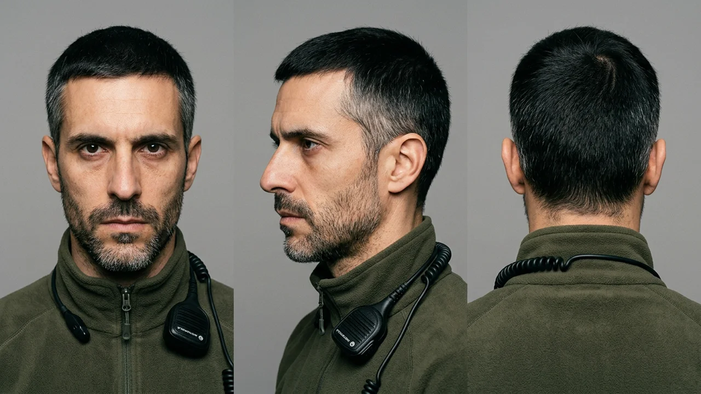
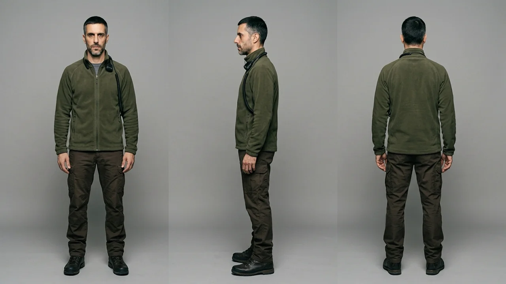
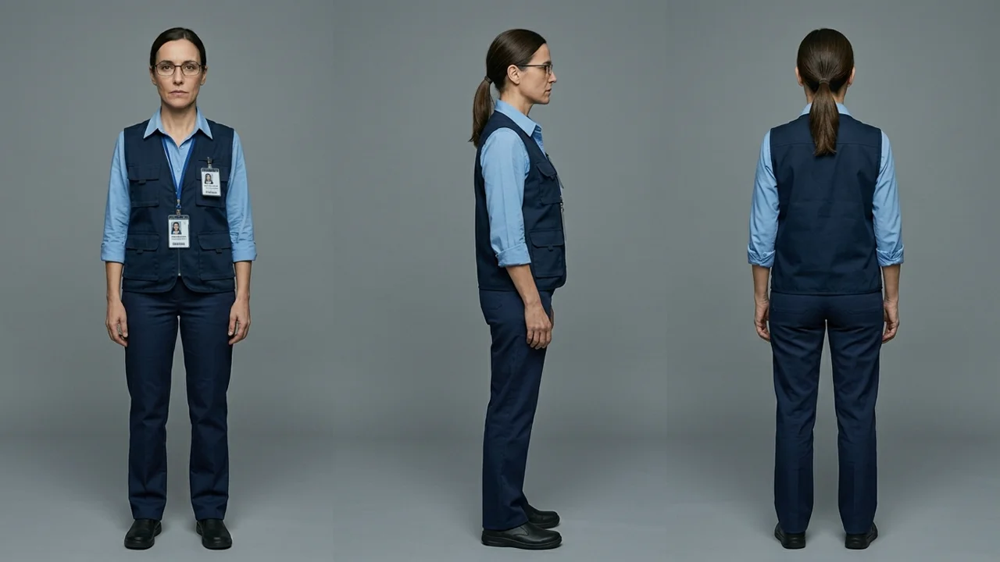

La profecía autocumplida del apagón
A las seis y diecisiete de la tarde del doce de noviembre, la bombilla de la cocina de Hugo Serrano parpadeó dos veces antes de extinguirse.
En la ladera norte de Cercedilla, las primeras sombras del invierno comenzaban a enfriar los pinos silvestres. Hugo no esperó al tercer parpadeo. Se puso en pie de un salto, soltó la taza de café sobre la mesa y miró por la ventana hacia el valle: el rosario de farolas de la carretera de Navacerrada se había apagado al unísono, sumiendo la vega en una negrura repentina.
Sacó el teléfono del bolsillo. La pantalla indicaba «Sin servicio».
—Ya está aquí —murmuró con la mandíbula apretada.
No había sorpresa en su voz, solo la confirmación amarga de una certeza largamente acariciada. Durante siete años, Hugo había invertido cada nómina de su empleo como antenista en acondicionar la antigua cuadra de piedra tras la vivienda: catorce placas solares monocristalinas, un banco de baterías de fosfato de hierro y litio, doscientos litros de gasóleo estabilizado y una estación de radioaficionado de onda corta capaz de emitir en todas las bandas autorizadas. En los manuales plastificados que guardaba en archivadores metálicos, aquel instante recibía el nombre de *Evento Cero*.
Bajó al cobertizo acorazado, encendió las luces led alimentadas por baterías y pulsó el conmutador del generador auxiliar. El motor diésel cobró vida con un traqueteo sordo y familiar que vibró en el suelo de cemento.
Hugo se ajustó los auriculares de casco, encendió el transceptor decamétrico y ajustó el dial en la frecuencia de siete mil cien kilohercios, la frecuencia de reunión de la Red Centinela.
La estática del éter rugió en sus oídos como una rompiente marina. Al girar el mando de sintonía, una voz agitada brotó entre silbidos:
—...atención todas las estaciones de la meseta norte. Caída total de telefonía y datos desde Burgos hasta Somosierra. Repito: sin portadora en las torres de enlace. Parece un pulso. Mantened escucha en canal de guardia.
Hugo apretó el pulsador del micrófono:
—Aquí Estación Centinela-Tres, Cercedilla. Confirmado corte de red comercial y caída de telefonía. Paso a protocolo de emergencia. Que nadie se desplace a las ciudades.
En cuestión de tres minutos, la banda de cuarenta metros se convirtió en un avispero de señales distorsionadas. Centenares de preparacionistas a lo largo de la cordillera central estaban encendiendo generadores, levantando mástiles telescópicos y proclamando que el colapso que llevaban años esperando había comenzado.
A cuarenta kilómetros de allí, en la sala acorazada del Centro de Control Eléctrico en La Moraleja, el ambiente era muy distinto.
Una pantalla mural semicircular de treinta metros de longitud mostraba el sinóptico de la península ibérica en líneas verdes y azules. Sobre el mapa, una pequeña franja entre Almaraz y Talavera parpadeaba en amarillo ámbar.
Laura Arribas caminaba con paso firme frente a las consolas de despacho, con un lápiz óptico en la mano y la vista clavada en el indicador digital de frecuencia: 49,94 hercios.
—¿Qué tenemos en la línea de cuatrocientos kilovoltios de La Cereal? —preguntó Laura con voz clara y pausada.
—Un transformador de intensidad reventado por degradación de aceite dieléctrico en la subestación de enlace, jefa —respondió el operador de transporte, tecleando con rapidez—. El relé de distancia ha disparado por seguridad y ha abierto dos interruptores. Hemos perdido ochocientos megavatios de golpe.
—Es una desconexión limpia —concluyó Laura, ajustándose las gafas—. La red europea está absorbiendo el escalón sin problemas. Ordena el arranque de dos turbinas de gas en Aceca para recuperar tensión en el nudo central. En hora y media cerramos los anillos y restablecemos el servicio a las poblaciones afectadas.
—El problema no es la red de transporte, Laura —intervino el técnico de enlace exterior, señalando los monitores de telefonía—. Las operadoras móviles de la zona centro tenían baterías degradadas en sus estaciones base. Al caer la corriente, cuatrocientos repetidores se han venido abajo y las centrales de conmutación se han saturado por el aluvión de llamadas. La gente en los pueblos no tiene internet ni cobertura.
Laura frunció los labios con hastío.
—La red eléctrica está sana. Que las operadoras gestionen su propia infraestructura. Nosotros a lo nuestro: mantener los cincuenta hercios estables y no reconectar carga hasta que Aceca esté acoplada en fase.
En ese momento sonó la sirena de advertencia en el cuadrante norte.
Sobre el mapa mural, una hilera de líneas de distribución secundaria en la sierra de Madrid comenzó a registrar oscilaciones abruptas. Cientos de microredes privadas, generadores de urbanizaciones y complejos residenciales estaban arrancando de forma sincronizada, inyectando corrientes parásitas y desestabilizando las lecturas de reactiva en los transformadores de cabecera.
—¿Qué demonios pasa en Guadarrama? —exclamó un operador—. Tenemos un incremento repentino de demanda en baja tensión que no responde a curvas de carga normales. Están encendiendo sistemas de bombeo y cargando bancos de baterías masivos.
Laura miró el indicador de frecuencia: acababa de caer a 49,82 hercios.
—Alguien está entrando en pánico antes de tiempo —dijo en voz baja—. Y van a complicarnos la maniobra.
En la cuadra de Cercedilla, la estática de la radio era un hervidero de conjeturas enloquecidas.
—...nos informan desde Valladolid de incendios en las subestaciones principales —decía una voz ronca con fuerte acento castellano—. Dicen que ha sido un ataque electromagnético coordinado. La televisión pública no emite. No hay señal institucional en ningún canal.
Hugo no contrastó el rumor. El silencio de las emisoras públicas no se debía a un ataque, sino a que los enlaces de microondas habían perdido la sincronía digital tras el apagón de los repetidores de enlace. Pero para Hugo y los miles de radioescuchas que abarrotaban las frecuencias, aquel silencio oficial era la prueba irrevocable de que el Gobierno había caído y las ciudades ardían en el caos.
—Atención a todos los miembros de la Red —anunció el coordinador general desde un refugio en la sierra de Gredos—. Si las redes troncales no se reactivan, en cuarenta y ocho horas no habrá suministro de agua en las ciudades y los suministros de alimentos se cortarán de raíz. Tenemos que restablecer el flujo de datos.
—El gran nodo neutral está en San Fernando de Henares —intervino Hugo por el micro, recordando los esquemas de fibra que había manejado como ingeniero—. El centro de datos de la Alcarria. Si ese complejo se reactiva, el tráfico de emergencia de los hospitales y de protección civil volverá a encaminarse.
—San Fernando está aislado por corte de suministro exterior —respondió otra estación desde Coslada—. Hay un retén de mantenimiento de nuestra red en la puerta. Los técnicos de la eléctrica tienen la subestación bloqueada porque dicen que no hay orden de reenganche.
Hugo sintió que la sangre le ardía en las sienes.
—Los técnicos de la compañía son burócratas esperando órdenes de un ministerio que ya no existe —sentenció Hugo con vehemencia ciega—. Si no metemos tensión a ese centro de datos ahora mismo, el país entero se desconectará de Europa para siempre. Tenemos cuadrillas con generadores industriales en el polígono. Saltad la valla y puentead los transformadores de entrada. Hacedlo por la fuerza si es necesario.
Aquella orden, transmitida en una frecuencia abierta a cientos de voluntarios armados con cajas de herramientas, cizallas y camiones cisterna de combustible, se propagó por la sierra como pólvora sobre rastrojo seco.
A las ocho y media de la noche, las alarmas del Centro de Control de La Moraleja dejaron de ser avisos para convertirse en una cascada roja ensordecedora.
—¡Laura! —gritó el operador de transporte, levantándose de la silla con las manos en la cabeza—. ¡Han cerrado manualmente los seccionadores de entrada del parque de San Fernando de Henares!
Laura se abalanzó sobre la consola central.
—¡Eso es imposible! —bramó—. ¡Ese nudo consume ciento veinte megavatios de potencia base! Les dije expresamente que no acoplaran grandes consumidores hasta que la interconexión con Francia estuviera reforzada. ¿Quién ha dado la orden de maniobra?
—Nadie de la casa —dijo el técnico con voz quebrada—. El personal de seguridad de la subestación informa de que un grupo de civiles con uniformes de emergencia y grupos electrógenos industriales han forzado las puertas del parque de alta tensión. Han puenteado los relés de interbloqueo con cables provisionales para dar luz al centro de servidores.
En la gran pantalla mural, la línea de cuatrocientos kilovoltios que rodeaba Madrid dibujó una curva convexa de sobrecarga brutal.
Ciento veinte megavatios de carga puramente inductiva entraron de golpe en un sistema que operaba en régimen de reserva frágil. En cuestión de tres segundos, la frecuencia angular se desplomó como una piedra en un pozo: 49,5... 49,2... 48,9 hercios.
—¡Disparo por subfrecuencia! —gritó Laura, tecleando desesperada los comandos de emergencia para deslastrar cargas secundarias—. ¡Abrid los interruptores de Madrid sur! ¡Cortad el ferrocarril! ¡Sacad los polígonos ya!
Pero las protecciones automáticas de las centrales generadoras fueron más rápidas que los dedos humanos.
Al detectar que la frecuencia caía por debajo del umbral de seguridad de los 48,5 hercios, los generadores de la central nuclear de Trillo abrieron sus disyuntores de forma autónoma para evitar que los rotores de las turbinas de vapor se descalibraran por resonancia mecánica. Novecientos megavatios desaparecieron de la red en una fracción de segundo.
Detrás de Trillo cayó Almaraz. Luego las centrales térmicas de ciclo combinado de Toledo y Castellón.
El desequilibrio entre la demanda desbocada y la generación menguante se volvió insostenible. En la frontera pirenaica, la interconexión submarina y aérea con Francia intentó inyectar dos mil megavatios para tapar la herida, pero la corriente de cortocircuito sobrepasó los límites de diseño de los transformadores de frontera en Vic y Santa Llogaia.
Con un destello azul visible a cincuenta kilómetros en el cielo nocturno, los devanados de tres transformadores gigantescos de ochocientas toneladas estallaron envueltos en fuego de aceite mineral.
El mallado ibérico se desgajó de la red síncrona continental europea.
En la sala de La Moraleja, los trescientos monitores del sinóptico se apagaron en riguroso silencio, sustituidos por las luces rojas de emergencia alimentadas por un sistema ininterrumpido de baterías que apenas duraría dos horas.
Laura Arribas soltó el lápiz óptico sobre la mesa de cristal. Miró la oscuridad que se tragaba las ventanas del edificio, contemplando el perfil negro de Madrid recortado contra un firmamento extrañamente limpio de estrellas.
—Se acabó —susurró con los ojos húmedos—. No volveremos a levantar esto en seis meses.
El colapso total tardó menos de cuarenta y ocho horas en mostrar su rostro definitivo.
Sin tensión en la red troncal, las plantas depuradoras y las estaciones de bombeo de agua del Canal de Isabel II se detuvieron. Las refinerías no pudieron bombear combustible hacia los oleoductos. Los camiones cisterna quedaron varados en las dársenas logísticas porque las bombas de gasolina de las estaciones de servicio no tenían corriente para extraer el diésel de los depósitos subterráneos.
En Cercedilla, el generador de Hugo Serrano continuaba roncando con regularidad tras la cuadra blindada.
Afuera, la nieve de diciembre cubría los caminos con una sábana de silencio aterrador. En el valle no brillaba una sola luz; no se escuchaban trenes, ni tráfico lejano, ni zumbido de transformadores. Solo el viento silbando entre los pinares secos.
En la radio ya no hablaba nadie.
Hugo se sentó frente a su mesa de transmisiones, demacrado y con los dedos entumecidos por el frío que empezaba a filtrarse en la cabaña. El combustible que creyó suficiente para tres años se estaba agotando a un ritmo alarmante para mantener calientes las baterías.
Sobre la repisa descansaba una vieja grabadora de bobina abierta que había conectado al receptor durante los primeros diez minutos del apagón de noviembre, antes de que comenzaran los gritos y los mensajes de movilización ciudadana.
Con un suspiro pesado, Hugo pulsó la tecla de reproducción.
La cinta magnética giró despacio con un siseo suave de polvo. De repente, entre un rumor limpio de estática tenue, brotó una voz femenina grabada en la frecuencia del boletín de radioaficionados de la Dirección General de Protección Civil.
Era la voz de una operadora de turno en Madrid, serena, profesional y pausada:
*«Aviso informativo a las dieciocho horas y veinte minutos. Se ha producido una avería mecánica localizada en un transformador de transporte en la provincia de Toledo. La red se encuentra estable y aislada según el protocolo de seguridad número cuatro. El suministro eléctrico se restablecerá de manera progresiva en un plazo estimado de noventa minutos...»*
Hugo sintió que la respiración se le congelaba en el pecho.
La cinta continuó girando unos segundos más antes de registrar los primeros pitidos de interferencia de su propia emisora entrando en antena. Y en ese último instante de calma previa al abismo, la voz de la operadora concluyó con una frase nítida que nadie en su comunidad preparacionista se había detenido a escuchar:
*«...rogamos a la población que mantenga la calma, no encienda generadores pesados ni intente forzar infraestructuras de transporte. Por favor, no hagan nada. Lo estamos solucionando».*
Hugo apagó la grabadora. Miró el interruptor de su generador traqueteando en la penumbra y comprendió que el monstruo al que tanto temían nunca había venido de fuera: lo habían alimentado ellos mismos, con cada cable tendido, cada alarma gritada al aire y cada certeza que no admitía la calma.
Capítulo 1 — El parpadeo en la cocina de Cercedilla y la activación del Evento Cero
El aviso en las frecuencias de radio y la movilización inmediata de los preparacionistas en la sierra.
Capítulo 2 — La sala de control de La Moraleja y los cincuenta hercios en peligro
Los ingenieros de la red eléctrica en La Moraleja luchan por frenar el desequilibrio de la frecuencia nacional.
Capítulo 3 — La histeria en el éter y el asalto al centro de datos de San Fernando
La histeria colectiva empuja a los grupos armados a sabotear las infraestructuras que creían vulnerables.
Capítulo 4 — El puenteo forzado de la subestación y el desplome de la frecuencia
El puenteo forzado de la subestación provoca exactamente el desplome general que todos temían.
Capítulo 5 — El colapso en cascada de las centrales y la fractura de los Pirineos
El colapso en cascada de las centrales y la fractura eléctrica con la red del resto de Europa.
Capítulo 6 — La nieve sobre la sierra silenciada y el mensaje en la cinta magnética
El silencio absoluto sobre la sierra nevada y la grabación en cinta magnética que atestigua la profecía cumplida.


Hugo Serrano
Protagonista; ingeniero de telecomunicaciones de treinta y siete años y coordinador técnico de la red preparacionista en la sierra de Guadarrama.